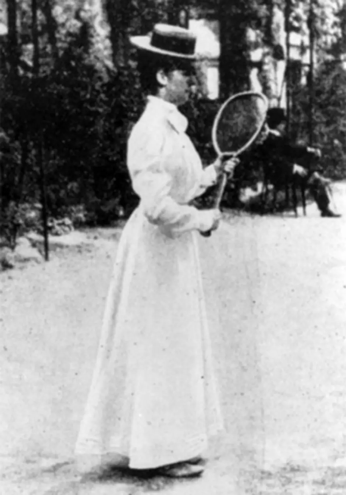
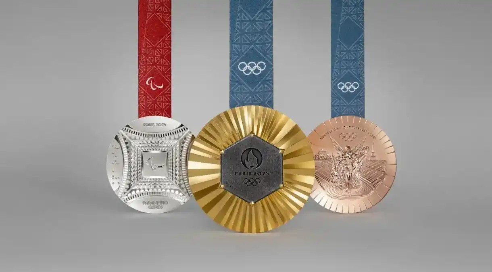

-As mulheres só foram autorizadas a participar das Olimpíadas de Paris em 1900. Na época, 22 mulheres competiram em cinco modalidades: Tênis, Vela, Croquet, Hipismo e Golfe, representando 2,2% do total de atletas.
"-A tcoha olímpica já visitou o espaço varias vezes.
-As medalhas das Olímpiadas de Paris têm pedaços da torre Eiffel.
"